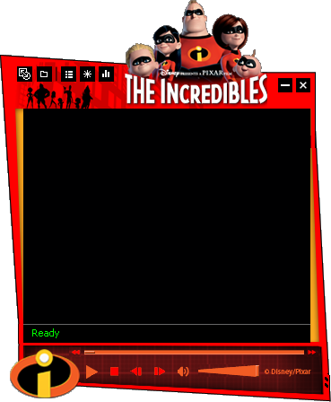

The Incredibles Media Player Skins
(Winamp/Windows Media Player)
Winamp
DOWNLOAD
.wal file (539 KB)
Windows Media Player

DOWNLOAD
.wmz file (125 KB)


 .wal file (539 KB).wmz file (125 KB)
.wal file (539 KB).wmz file (125 KB)